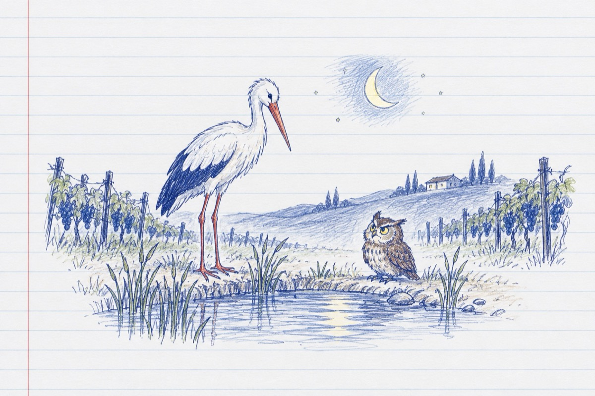

Întâlnire
Un cocostârc nocturn pe balta dintre vii la mal
S-a întâlnit cu-o bufniță vă spun!
-Ce cauți tu aici, e-un caz penal
I-a spus bufnița pusă pe scandal!
-Sunt paznicul de noapte precum vezi
Șeful poliției locale
Am dreptul să te controlez
Ce ai în gușă, răspunde la-ntrebare!
-Ce am în gușă și-n căpușă
Precum vezi ți-o spun în față
Dacă mă sâcâi lucrez fără mănușă!
Și-ți dau un cioc în cap, de-o să rămâi în ceață!
Tu ce stai aici în baltă?
Eu sunt la mine acasă
Iar de tine bufniță, nici nu-mi pasă!
Vasile Groza